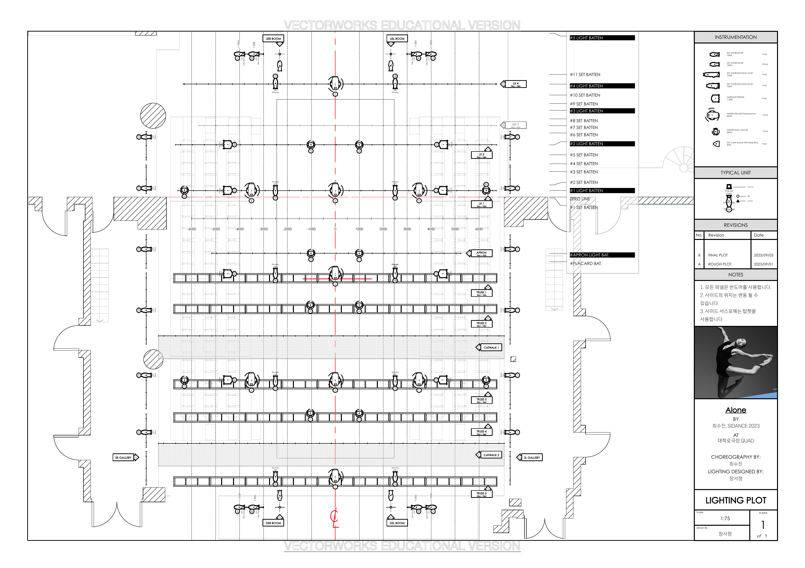
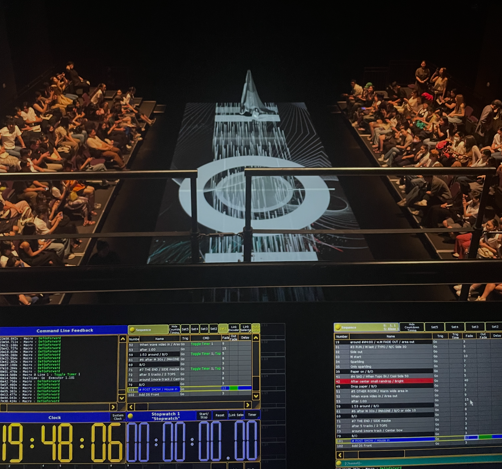

Alone
How can lighting shift visual emphasis among the live body, AI-generated text and imagery, and the surrounding environment?

Lighting as an attention system
In the original design, I timed cues to shift visual emphasis among the performer, projected text and imagery, and their shared field. I am reconstructing those human-operated choices from the surviving grandMA2 show file and a seven-minute highlight. The categories below will be retrospective annotations, not measurements of audience attention.

Archival material
Original lighting documentation and a live operation view from Alone, 2023.


Comparative visibility states
These frames compare how the performance composed visibility across the live body, projected imagery, and light.


Performance highlight
A seven-minute edited highlight offering context for the lighting, projection, and AI-generated text and imagery discussed above.
What this changed

Follow-up study in preparation: comparing the original human-operated cue sequence with bounded alternative selections for the same excerpt.